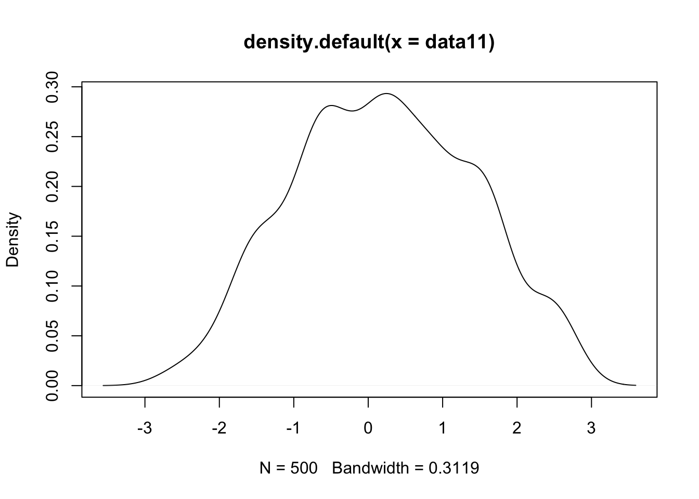
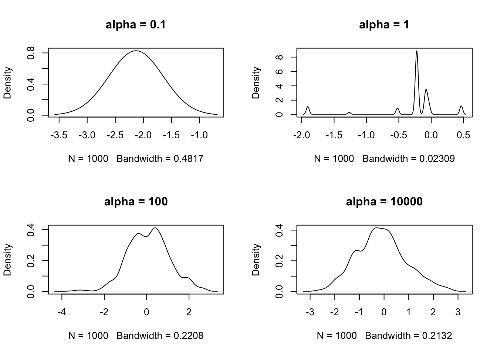

Stat374 HW2
Zihao_Wang
10/26/2018
Last updated: 2018-10-28
workflowr checks: (Click a bullet for more information)-
✖ R Markdown file: uncommitted changes
The R Markdown is untracked by Git. To know which version of the R Markdown file created these results, you’ll want to first commit it to the Git repo. If you’re still working on the analysis, you can ignore this warning. When you’re finished, you can runwflow_publishto commit the R Markdown file and build the HTML. -
✔ Environment: empty
Great job! The global environment was empty. Objects defined in the global environment can affect the analysis in your R Markdown file in unknown ways. For reproduciblity it’s best to always run the code in an empty environment.
-
✔ Seed:
set.seed(20181007)The command
set.seed(20181007)was run prior to running the code in the R Markdown file. Setting a seed ensures that any results that rely on randomness, e.g. subsampling or permutations, are reproducible. -
✔ Session information: recorded
Great job! Recording the operating system, R version, and package versions is critical for reproducibility.
-
Great! You are using Git for version control. Tracking code development and connecting the code version to the results is critical for reproducibility. The version displayed above was the version of the Git repository at the time these results were generated.✔ Repository version: 687ae4e
Note that you need to be careful to ensure that all relevant files for the analysis have been committed to Git prior to generating the results (you can usewflow_publishorwflow_git_commit). workflowr only checks the R Markdown file, but you know if there are other scripts or data files that it depends on. Below is the status of the Git repository when the results were generated:
Note that any generated files, e.g. HTML, png, CSS, etc., are not included in this status report because it is ok for generated content to have uncommitted changes.Ignored files: Ignored: .DS_Store Ignored: data/.DS_Store Untracked files: Untracked: Quiz 1.pdf Untracked: analysis/hw2.Rmd Untracked: assignment/assignment2.pdf Untracked: code/hw1.pdf Untracked: code/ttest.Rmd Untracked: code/ttest.pdf Untracked: data/hw2/ Untracked: docs/figure/hw2.Rmd/ Unstaged changes: Modified: code/hw1.Rmd Deleted: code/hw1.aux Deleted: code/hw1.fdb_latexmk Deleted: code/hw1.fls Deleted: code/hw1.log Deleted: code/hw1.out Deleted: code/hw1.tex Modified: data/assn1-wangzh.txt
rm(list=ls())
set.seed(12345)
options(warn = -1)
knitr::opts_knit$set(root.dir = '~/Desktop/stat374-fall-2018/analysis/')
library(kedd)
library(locfit)locfit 1.5-9.1 2013-03-22library(gridExtra)
library(reshape)
library(gam)Loading required package: splinesLoading required package: foreachLoaded gam 1.16library(MASS)
library(mvtnorm)
#library(tidyverse)
suppressMessages(library("tidyverse"))4 Pulling Yourself Up by the Bootstrap
B = 1000 ## number of bootstrap replicates
n_exper = 500 ## number of experiments
alpha = 0.05 ## (1-alpha) confidence interval(a)
## generate data from Y = (1,X, X^2) * beta + e
n = 100
beta = c(-1,2,-1)
X = runif(n,0,2)
X_expand = cbind(X^0, X, X^2)
e = rnorm(n,0,0.2^2)
Y = X_expand %*% beta + eestimate_theta1 <- function(X,Y, seed){
set.seed(seed)
idx = sample(1:n, B, replace = TRUE)
X_sampled = X[idx]
Y_sampled = Y[idx]
model = lm(Y_sampled ~ 1 + X_sampled + I(X_sampled^2))
beta = as.numeric(model$coefficients)
theta = - beta[2]/(2*beta[3])
return(theta)
}
## experiments
seeds = 1:n_exper
theta_em = sapply(seeds, function(seed) estimate_theta1(X,Y,seed))
## find (1-alpha) CI
plot(density(theta_em))
print(quantile(theta_em, probs = c(alpha,1-alpha))) 5% 95%
0.9951499 0.9990307 (b)
## generate data from X = 10Z + e, Y = 10Z + delta
n = 100
e = rnorm(n,0,1)
delta = rnorm(n,0,1)
Z = rnorm(n,0,1)
X = 10 * Z + e
Y = 10 * Z + delta
estimate_theta2 <- function(X,Y,Z, seed){
set.seed(seed)
idx = sample(1:n, B, replace = TRUE)
X_sampled = X[idx]
Y_sampled = Y[idx]
Z_sampled = Z[idx]
XYZ = cbind(X_sampled,Y_sampled,Z_sampled)
Sigma = cov(XYZ)
Omega = ginv(Sigma)
theta_hat = - Omega[1,2] / (sqrt(Omega[1,1]*Omega[2,2]))
return(theta_hat)
}
## experiments
seeds = 1:n_exper
theta_em2 = sapply(seeds, function(seed) estimate_theta2(X,Y,Z,seed))
## find (1-alpha) CI
plot(density(theta_em2))print(quantile(theta_em2, probs = c(alpha,1-alpha))) 5% 95%
-0.03045795 0.04870270 (c)
n = 100
p = 10
Sigma = diag(p)
generateX3 <- function(p){
return(as.vector(rmvnorm(1,replicate(p,0),Sigma)))
}
X = t(replicate(n,generateX3(p)))
estimate_theta3 <- function(X,seed){
set.seed(seed)
idx = sample(1:n, B, replace = TRUE)
X_sampled = X[idx,]
Sigma = cov(X_sampled)
theta_hat = tail(svd(Sigma)$d,1)
return(theta_hat)
}
## experiments
seeds = 1:n_exper
theta_em3 = sapply(seeds, function(seed) estimate_theta3(X,seed))
## find (1-alpha) CI
plot(density(theta_em3))
print(quantile(theta_em3, probs = c(alpha,1-alpha))) 5% 95%
0.4583757 0.5155941 5
(a)
Use the notation as in the lecture.
Show by induction. Let \(P_k := \sum_{j = k}^\infty w_k\). We want to show that $P_k = _{j = 1}^k (1-_J) $ with probability 1.
When \(k = 1\), of course \(P_1 = 1-\gamma_1\) with probability 1.
Now assume the case for \(k\) is right, prove the case for \(k+1\) as below:
With probability 1 we have: \[ P_{k+1} = P_k - w_k = \Pi_{j = 1}^k (1-\gamma_j) - \gamma_k \Pi_{i = 1}^{k-1}(1-\gamma_i) = \Pi_{j = 1}^{k+1} (1-\gamma_j)\]
(b)
(c)
(d)
dp_normal <- function(N=1000,alpha){
G_0 <- function(N) rnorm(N, 0, 1)
s = G_0(N)
gamma = rbeta(N,1,alpha)
w = numeric(N)
w[1] = gamma[1]
w[2:N] = sapply(2:N, function(i) gamma[i] * prod(1-gamma[1:(i-1)]))
dp_samples = sample(s,prob = w, replace = TRUE)
return(plot(density(dp_samples), main = paste0("alpha = ", alpha)))
}par(mfrow=c(2,2))
dp_normal(alpha = 0.1)
dp_normal(alpha = 1)
dp_normal(alpha = 100)
dp_normal(alpha = 10000)
(e)
1
Empirical cdf can just by computed using formula.
BY DKW, \[ \Pr(sup_{x \in R } |F_n(x) = F(x)| > \epsilon) < 2e^{-2n\epsilon^2} \]
Let \(\alpha = 2e^{-2n\epsilon^2}\), we have \(\epsilon = (\frac{1}{2n} log(2/\alpha))^{1/2}\) and that \([F_n(x)-\epsilon,F_n(x)+\epsilon]\) is our \(1-\alpha\) confidence band.
n = 10
emcdf_cb <- function(n){
F = function(n) rnorm(n,0,1)
X = F(n)
## empirical cdf
empirical_CDF <- function(x,X){
n = length(X)
return(length(X[X < x])/n)
}
xs = seq(-3,3,0.1)
em_cdf = sapply(xs, function(x) empirical_CDF(x,X))
cb_width = sqrt(1/(2*n) * log(2/0.05))
plot(xs, em_cdf, type = "l", main = paste0("n = ", n))
lines(xs, em_cdf + cb_width, col = "red")
lines(xs, em_cdf - cb_width, "col" = "green")
}par(mfrow=c(3,1))
emcdf_cb(10)
emcdf_cb(25)
emcdf_cb(100) #### Comment: As n (the number of samples) gets larger, the empirical cdf gets smoother, with confidence band width smaller.
#### Comment: As n (the number of samples) gets larger, the empirical cdf gets smoother, with confidence band width smaller.
Session information
sessionInfo()R version 3.4.3 (2017-11-30)
Platform: x86_64-apple-darwin15.6.0 (64-bit)
Running under: macOS High Sierra 10.13
Matrix products: default
BLAS: /Library/Frameworks/R.framework/Versions/3.4/Resources/lib/libRblas.0.dylib
LAPACK: /Library/Frameworks/R.framework/Versions/3.4/Resources/lib/libRlapack.dylib
locale:
[1] en_US.UTF-8/en_US.UTF-8/en_US.UTF-8/C/en_US.UTF-8/en_US.UTF-8
attached base packages:
[1] splines stats graphics grDevices utils datasets methods
[8] base
other attached packages:
[1] forcats_0.3.0 stringr_1.3.1 dplyr_0.7.4 purrr_0.2.5
[5] readr_1.1.1 tidyr_0.8.1 tibble_1.4.2 ggplot2_2.2.1
[9] tidyverse_1.2.1 mvtnorm_1.0-8 MASS_7.3-50 gam_1.16
[13] foreach_1.4.4 reshape_0.8.7 gridExtra_2.3 locfit_1.5-9.1
[17] kedd_1.0.3
loaded via a namespace (and not attached):
[1] Rcpp_0.12.16 lubridate_1.7.4 lattice_0.20-35
[4] assertthat_0.2.0 rprojroot_1.3-2 digest_0.6.15
[7] psych_1.8.4 R6_2.2.2 cellranger_1.1.0
[10] plyr_1.8.4 backports_1.1.2 evaluate_0.10.1
[13] httr_1.3.1 pillar_1.2.2 rlang_0.2.0
[16] lazyeval_0.2.1 readxl_1.1.0 rstudioapi_0.7
[19] whisker_0.3-2 R.utils_2.6.0 R.oo_1.22.0
[22] rmarkdown_1.9 foreign_0.8-70 munsell_0.4.3
[25] broom_0.4.4 compiler_3.4.3 modelr_0.1.2
[28] pkgconfig_2.0.1 mnormt_1.5-5 htmltools_0.3.6
[31] workflowr_1.0.1 codetools_0.2-15 crayon_1.3.4
[34] R.methodsS3_1.7.1 grid_3.4.3 nlme_3.1-137
[37] jsonlite_1.5 gtable_0.2.0 git2r_0.21.0
[40] magrittr_1.5 scales_0.5.0 cli_1.0.0
[43] stringi_1.2.2 reshape2_1.4.3 bindrcpp_0.2.2
[46] xml2_1.2.0 iterators_1.0.9 tools_3.4.3
[49] glue_1.2.0 hms_0.4.2 parallel_3.4.3
[52] yaml_2.1.19 colorspace_1.3-2 rvest_0.3.2
[55] knitr_1.20 bindr_0.1.1 haven_1.1.1 This reproducible R Markdown analysis was created with workflowr 1.0.1